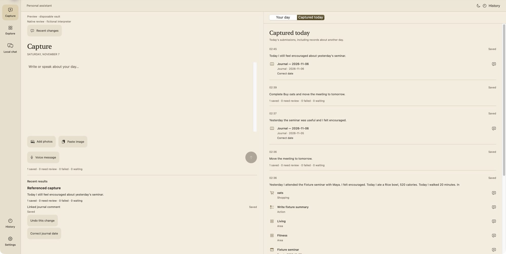
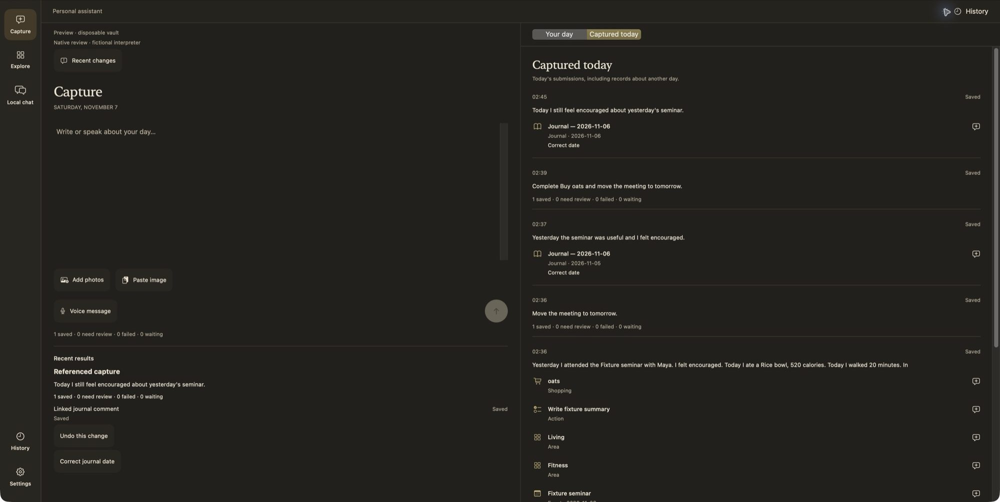

Write about your day. It becomes connected records.
Native Mac app · working personal-use prototype · public release in development
This page copies Capture with a few simple rules so you can try your own words. It can't read photos. The meal photo result is what the real Mac app saved for that photo on November 9, 2026. Nothing you type here is sent or stored.
Meal photo: “Salmon dinner” by Vancouver Bites!, CC BY-SA 2.0, resized.
.jpg){kind=link}
Everyday notes, connected to the rest of your life.
Write or speak about your day. The assistant turns it into personal records for tasks, plans, people, journal entries, meals and workouts. It keeps your original words, shows what it saved, and lets you correct or undo supported changes.
What works today, and what is still ahead
Each item is sorted by evidence: built and tested in the Mac prototype, being built now, or planned.
Works in the Mac prototype
- Text and voice-message CaptureTyped notes and editable voice transcripts become connected Markdown records.
- Photos with optional wordsAdd several images with context. Photo interpretation currently uses the cloud.
- Checked saving, correction and UndoProposed changes are validated before saving. Undo keeps your original input in History.
- Explore your recordsJournal, People, Meals, Workouts, Goals, Timeline, Notes and other views.
- Your dayRead your selected Apple Calendar events and Reminders beside Capture. Supported plans and tasks can be added to destinations you choose.
- Local Qwen on this MacText Capture and Local chat can run through a local model service, without ChatGPT sign-in.
In development
- App-owned local libraryStart with a private library on first launch. Obsidian becomes an optional companion instead of a requirement.
- Export, backup and restoreReadable export and complete backups that keep links, original inputs and History.
- Account controlsComplete sign-out and revocation, usage-limit handling and a release privacy notice.
- iPhone and iPadA shared build exists and compiles. It is not released or fully tested.
Planned
- Mac App Store editionA one-time purchase. Price and release date are not announced.
- Free open-source editionPublished on GitHub and built around local models.
- Use your own ChatGPT planOptional cloud interpretation for eligible users, subject to OpenAI approval.
Capture on the left. Today's results on the right.
Every submission stays listed with what it produced, so you can drag a saved item back into Capture to add comments or correct it.


One app core, two ways to get it
Both editions are planned. Neither is available to download yet.
Mac App Store
A one-time paid edition for Mac, with checked saving, correction and Undo. Cloud interpretation would be optional. The purchase would not include unlimited cloud AI use.
Open source on GitHub
A free edition that uses local models on your Mac. Photo interpretation still relies on the cloud today, so it would be off or explicitly opt-in in this edition.
I am seeking commercial access to Sign in with ChatGPT so eligible customers could choose to use their own ChatGPT plans for supported AI requests. This option depends on OpenAI approval and each user's eligibility. It is not currently offered as a publicly available feature, and the final cloud billing arrangement is still being decided. This project is not endorsed by OpenAI.
Where your records go
This describes the current prototype. A full privacy notice will be published before the app is distributed.
Records are Markdown files
The prototype keeps records and original inputs in a Markdown folder you select. If that folder is synced by iCloud or another service, that service also receives the files.
Local model requests stay on your Mac
With Local Qwen selected, text requests run through the model service on your Mac. History and recovery data are still kept locally.
Cloud requests go to OpenAI
Choosing cloud interpretation sends the submitted content and needed context to OpenAI. Photo requests include prepared images and text recognized from them.
Credentials stay in Keychain
ChatGPT sign-in credentials are stored in macOS Keychain. Signing in does not give the app access to your ChatGPT conversations.
Undo keeps your original words
Undo reverses eligible generated changes and refuses to remove records that were changed afterwards. Your original input stays in History.
Still being completed
Account disconnection, data deletion controls and release privacy documentation are not finished yet.
Recent progress
Milestones from the project's verified progress record, newest first.
- Continuous Capture: drag saved events, tasks and results into the editor and write comments around them.
- Dark paper workspace with live Your day beside Capture, plus a light and dark appearance switch.
- Typed and spoken conversations in Local chat on Mac.
- Local Qwen text Capture and Local chat, working without ChatGPT sign-in.
- Capture reliability fixes and better handling of meal and workout dates.
- Photo Capture, native Explore layouts and the interactive People map.
- The paper interface for Mac and iPhone.